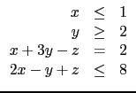
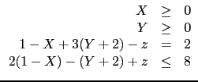
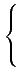
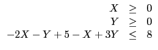
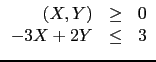
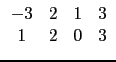

suivant: Premier cas : 3 arguments
monter: Programmation linéaire
précédent: La commande Xcas :
Table des matières
Index
Un simplexe est une portion de
 n délimitée par des
hyperplans.
n délimitée par des
hyperplans.
L'algorithme du simplexe sert à maximiser une fonction linéaire
sous des contraintes d'égalité ou d'inégalité linéaire.
Le principe de l'algorithme consiste à trouver un sommet du simplexe
défini par les contraintes, puis à sélectionner une arête
et la suivre jusqu'au sommet suivant, la sélection se faisant
de sorte à ne jamais diminuer la valeur de la fonction linéaire.
On effectue donc les étapes suivantes
- réécrire les contraintes impliquant une seule variable
sous la forme
xk
 0, éliminer si possible par pivot de Gauss
les variables sans contraintes (ou ajouter des variables). À la fin de cette
étape, on doit avoir pour contraintes que toutes les composantes des
éléments du simplexe sont positives.
0, éliminer si possible par pivot de Gauss
les variables sans contraintes (ou ajouter des variables). À la fin de cette
étape, on doit avoir pour contraintes que toutes les composantes des
éléments du simplexe sont positives.
- transformer si nécessaire les contraintes d'inégalité
restante en égalité (par ajout de variables d'écart) avec un
second membre positif,
- construire un sommet s'il en existe (ce qui dans les cas
non évidents se fait en optimisant une fonction artificielle),
- passer de sommet à sommet.
Un sommet va être caractérisé dans la suite par ses composantes
nulles et ses composantes non nulles. La représentation matricielle
associée à un sommet des contraintes d'égalité
fait apparaitre une sous-matrice identité dans les
colonnes correspondant aux composantes non nulles du sommet.
Par exemple, si on part du problème
max(2
x +
y -
z + 4)/


max(- 2
X +
Y -
z + 8)/


max(- 2X + Y - (5 - X + 3Y) + 8)/
soit
max(- X - 2Y + 3)/
Il faut ici ajouter une variable d'écart t 0 pour
transformer la dernière inégalité en égalité :
on pose
t = 3 - (- 3X + 2Y) et on a alors
t 0 et
-3X + 2Y + t = 3 est équivalent à
-3X + 2Y  3, et
cela donne un sommet de départ évident.
La matrice correspondant à ces conditions est alors la ligne
3, et
cela donne un sommet de départ évident.
La matrice correspondant à ces conditions est alors la ligne
(- 3, 2, 1, 3)
le sommet de départ associé est
(X, Y, t) = (0, 0, 3)
la sous-matrice identité utilise la 3ème colonne (t est le coefficient
non nul).
On pourrait passer le coefficient non nul en 2ème colonne
(sommet
(X, Y, t) = (0, 3/2, 0)) en réécrivant l'égalité sous la forme
(- 3/2, 1, 1/2, 3/2)
mais on ne pourrait passer le coefficient non nul en 1ère colonne
(il n'y a en effet que 2 sommets à ce simplexe).
Avec Xcas, on tape :
simplex_reduce([[-3,2]],[3],[-1,-2])
On obtient :
(0,[0,0,3],[[-3,2,1,3],[1,2,0,0]])
En général,
le passage d'un sommet à un autre sommet consiste alors à effectuer
une opération de réduction de Gauss qui fait sortir une colonne
et entrer une autre colonne dans les composantes non nulles du sommet,
ce qui revient à déplacer la sous-matrice identité. On doit
prendre garde à effectuer l'opération de réduction de Gauss
en conservant la positivité du membre de droite des contraintes
de l'égalité, et ce sans diminuer la valeur de la fonction
à optimiser. Pour pouvoir réaliser cette dernière condition,
on augmente la matrice des contraintes
d'égalité par une ligne formée des opposés des coefficients
de la fonction à maximiser, sauf en dernière colonne (on y met
le coefficient constant de la fonction à maximiser). Dans l'exemple
ce serait


L'instruction simplex_reduce de Xcas applique l'algorithme
du simplexe dans deux situations distinctes : soit le problème
est posé sous forme ``canonique'' et on lui donne 3 arguments
(cf. infra), soit on lui donne un seul argument qui doit être
une matrice ``associée à un sommet'' au sens de ce paragraphe.
suivant: Premier cas : 3 arguments
monter: Programmation linéaire
précédent: La commande Xcas :
Table des matières
Index
Documentation de giac écrite par Renée De Graeve